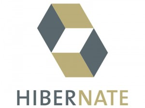
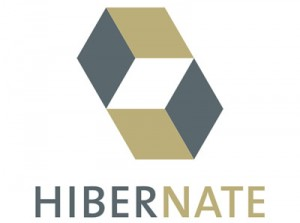
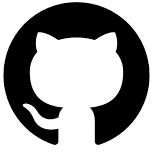
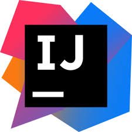
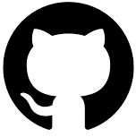
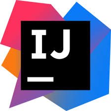

A Propos
Après plus de 10ans d'expériences de gestion commerciale et d'encadrement d'équipes dans la grande distribution, j'ai pris la décision, suite à une forte réflexion et un bilan de compétences, de me reconvertir dans le développement web.
Ma Recherche
Afin de compléter ma formation, je souhaîte apporter mes connaissances au service d'une entreprise en tant que développeuse web back-end junior lors d'un stage qui débutera au mois d'Août. A ce titre, je mettrais à profit mes capacités en matière de communication telle que mon aisance à travailler en équipe . De plus, j'y démontrerais également mon ouverture d'esprit à travers ma curiosité, mon interêt pour le domaine ainsi que mon atout d'adaptation tant à l'équipe de travail qu'aux méthodes et objectifs demandés. Enfin, j'accomplirais avec perséverance et conscienseusement, les missions qui me seront confiées.
Mes Compétences Techniques
 

 



Projets
Projet personnel réalisé pour l'évaluation finale de la formation
Projet :
Site de cirque qui permet de se créer un compte, de le modifier et de réserver des cours avec envoie de mail de confirmation.
Compétences techniques utilisées :
Java, Java Mail, Spring-Boot, Spring-Security, Hibernate,
MySQL, Thymeleaf, HTML, CSS, Git, Github,
Backlog Produit
Durée :
2 jours
Groupe :
1 personne
Projet client
Client :
Synergie family
Demande client :
Gestion des animateurs via un back office
Compétences techniques utilisées :
Java, Java Mail, Spring-Boot, Spring-Security, Hibernate,
MySQL, Thymeleaf, HTML, CSS, Materialize, Git, Github,
SCRUM, Backlog Produit
Durée :
8 semaines à raison de 2 jours par semaine en
moyenne soit 16 jours
Groupe :
4 personnes
Hackathon pour Doctolib réalisé en 48H :
Extension du site et de l'application Doctolib
permettant à un medecin de généré une ordonnance
avec suivis pour un patient, cette ordonnance apparaît dans l'application du patient avec des notifications pour la prise de chaque médicament à telle heure,
le patient valide si il a bien pris ce médicament à l'heure, en retard ou si le médicament a été oublié.
Le médecin peut suivre en temps réel le suivit du traitement.
Cible:
des traitements pour des pathologies lourdes
Résultat:
sur un total de 101 équipes dans toute l'europe, notre projet a été sélectionné parmis les 11 finalistes.
Projet réalisé en formation :
Site web de création de liste de cadeaux
pour tous les thèmes
Nom :
MakeMeHappy
Compétences techniques utilisées :
Wireframe,Backlog Produit, Burndown chart,
Git/Github, HTML, CSS,
SCRUM, Spring-Boot, Thymeleaf, JDBC et MySQL
Durée :
8 semaines à raison de 2 jours par semaine
en moyenne soit 16 jours
Groupe :
4 personnes
Hackathon réalisé en formation :
Application de rencontre entre tous les
personnages de
Star Wars
Nom :
Star Love
Compétences techniques :
Wireframe, git/github, HTML, CSS, Spring-Boot,
Thymeleaf,
JDBC et MySQL
Durée :
Réalisé en 24H
Groupe :
2 personnes
Projet réalisé en formation :
Site web du restaurant La p'tite Ardoise
Durée :
3 jours
Groupe :
3 personnes
Compétences techniques :
Wireframe, Git/Github, HTML et CSS
Expériences
LIDL
Adjointe Manager 2014-2018
Progression du CA de 20%
Amélioration des résultats d'inventaire (en moyenne -0,35 -> objectif -0,50)
Amélioration de la productivité annuelle (360)
Remplacement Responsable Magasin 2012-2014
Amélioration des résultats d'inventaire (en moyenne -0,50)
Amélioration de la productivité annuelle (300)
Changement de gamme et passage au pain
Responsable de Caisse 2009-2012
Caissière 2008-2009
Auchan
Employée Libre Service 2007-2008
Saison Jouet et Blanc
Ticoon
Vendeuse en restauration rapide 2005-2007
Travail saisonnier pendant toutes les vacances scolaires
Dès ma majorité, j'ai été embauchée en contrat étudiant
Formations
Wild Code School
Formation développement web Java
Du 2 mars 2020 au 31 juillet 2020
Réalisation de 2 projets école et d'un projet client
Lycée St Félix
Baccalauréat STG(Sciences Technologies de la Gestion)
Contact
chevreauswann@outlook.fr
06 35 46 82 87
Nantes